Découpe Laser
Ruby Speedy 400
Université de Lorraine | ENSGSI
2024-06-12
But du Tutoriel
But pédagogique de ce tutorial
- ü߆ Connaisences : - Domaine de la d√©coupe laser
- üî® Savoir-faire : - Utiliser la d√©coupeuse laser
- ✍Compéténces: : - Être capable de découper un objet au LF2L
Démarrage
Tournez la clé pour démarrer la machine, en position “i”.
Tournez à nouveau comme si vous démarriez une voiture (c’est un mouvement qui revient à la position de départ, comme un ressort).
Calibration

La machine commencera une série de calibrations et de vérifications. Un message “appareil pas prêt” apparaîtra. Il faut attendre quelques minutes. Il est important de ne pas toucher au capot pendant ce processus. Si vous le faites, la machine affichera une erreur et il faudra tout redémarrer.
Attendez jusqu’à ce que le message “la file d’attente est vide” apparaisse. À ce moment-là, vous pouvez soulever le capot.
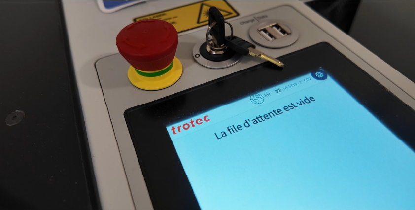
Envoyer à graver et couper :
Le fichier SVG est envoyé à la plateforme en ligne Ruby.

Les réglages nécessaires sont générés dans le site.
Configurez la découpe en faisant attention aux couleurs :
- Rouge : Découpe
- Noir : Gravure
Envoyer le fichier à la liste d’attente de la découpeuse laser.
La machine doit être allumée. (retour à la rubrique allumer la machine)
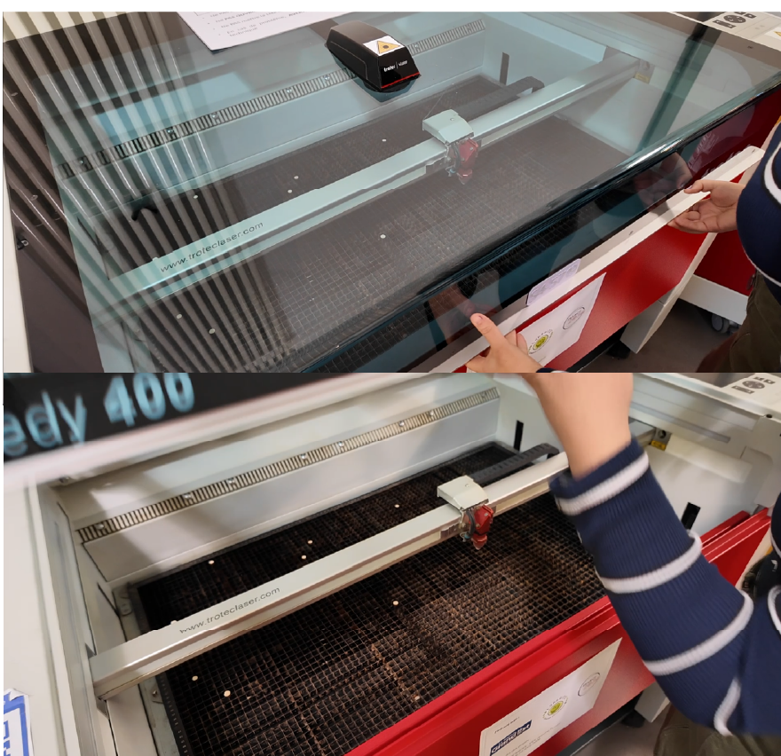
Ouvrez le capot.
Placez le matériau dans l’angle supérieur droit.
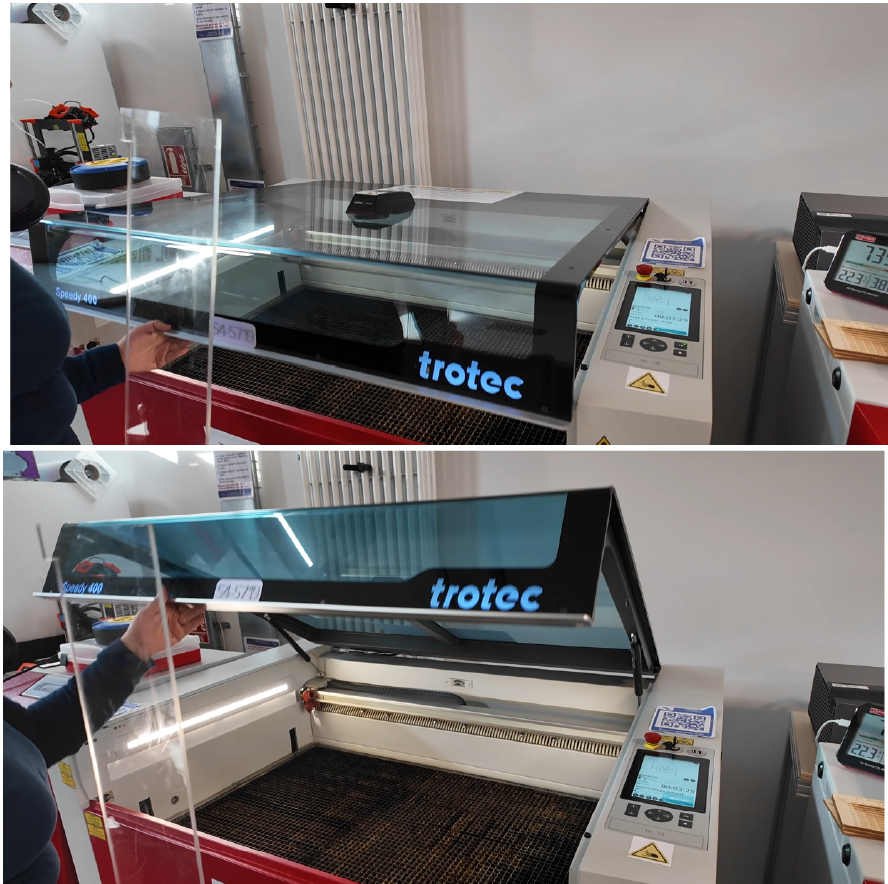
Déplacez la tête de découpe vers une section où se trouve le matériau.
Appuyez simultanément sur les flèches haut et bas pour que la machine calibre la hauteur du matériau.
Attention à sélectionner l’option “point d’accroche au laser” : - Avec cette option, la buse commencera à découper à partir de la position actuelle de la machine. - Sans cette option, le processus commencera depuis l’origine prédéfinie (angle supérieur gauche).
Comment nettoyer la machine
Pour effectuer le nettoyage, il faut prendre en compte les éléments suivants :
- Manipuler avec précaution la lentille et le miroir.
- Les tenir avec la paume de la main pour éviter qu’ils ne tombent.
- Placer un morceau de serviette en dessous pour amortir une éventuelle chute.
- N’utiliser que les matériaux fournis par le fabmanager.
- Utiliser un tissu spécial pour le nettoyage, fourni avec la machine. Ce tissu ne doit être utilisé que sur un seul côté de chaque lentille.
- Le liquide de nettoyage est conçu par le fabricant et est compatible avec les optiques de la machine.
Nettoyage du miroir
Manipulez toujours les lentilles et miroirs avec soin, car ce sont des pièces très délicates.
Dévissez les deux vis du miroir à la main.

Vérifiez les vis et assurez-vous que le miroir est bien sécurisé avant de le retirer.
Retirez délicatement le miroir et placez-le dans un endroit sécurisé.
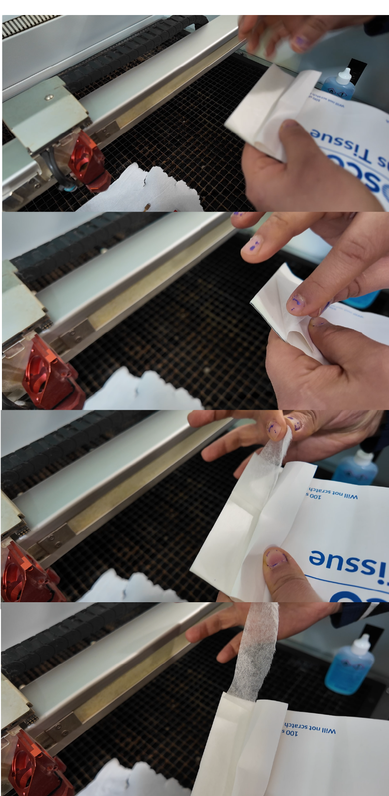
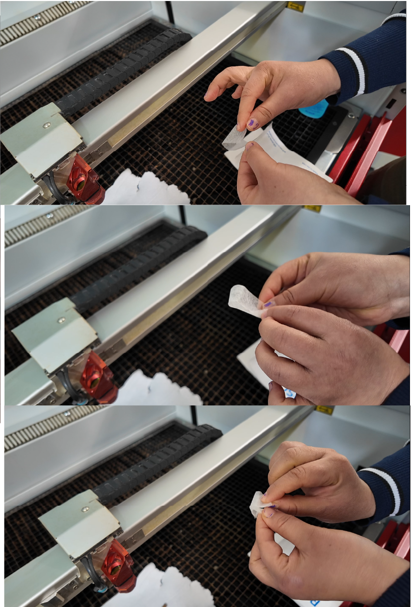
Prenez un bord du papier spécial.
Pliez le papier plusieurs fois, en veillant à ne pas toucher les parties en contact avec le miroir.
Appliquez une goutte de liquide spécial sur le miroir.
Tenez la paume de votre main en dessous pour garantir que le miroir ne tombe pas.
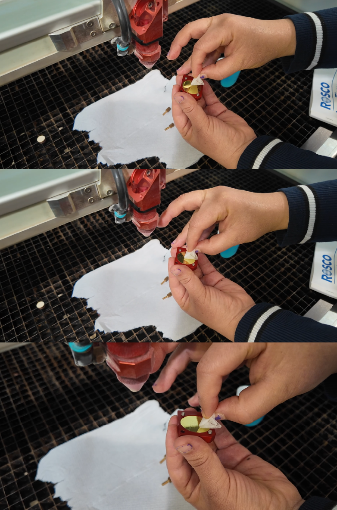
Avec le papier nettoyant, effectuez des mouvements circulaires doux, du centre vers l’extérieur.
Assurez-vous qu’il ne reste aucune trace de graisse.
Le liquide contient de l’alcool, attendez son évaporation complète.
Replacez le miroir en respectant son orientation (la partie plate doit être à l’intérieur du buzz).
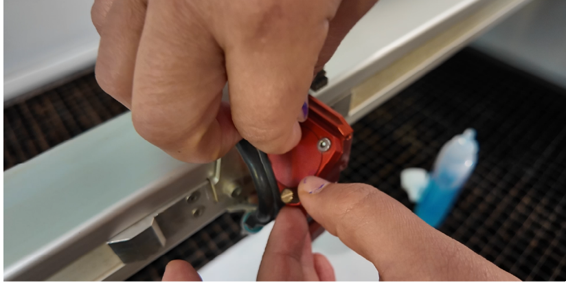
Maintenez le miroir en place tout en resserrant les vis, sans trop forcer.
Nettoyage de la lentille :
⚠️ Manipulez toujours les lentilles et miroirs avec soin, car ce sont des pièces très délicates.
Dévissez la vis rouge pour retirer la lentille noire.
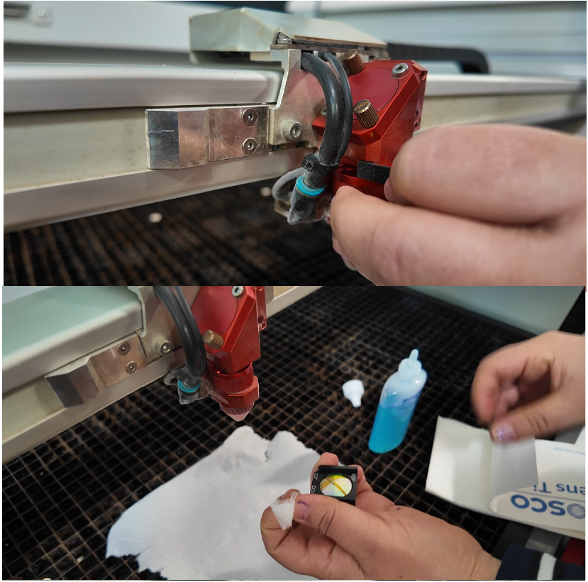
Tenez la paume de votre main en dessous pour éviter que la lentille ne tombe.
La lentille comporte une flèche et la mention “TOP” indiquant sa position correcte.
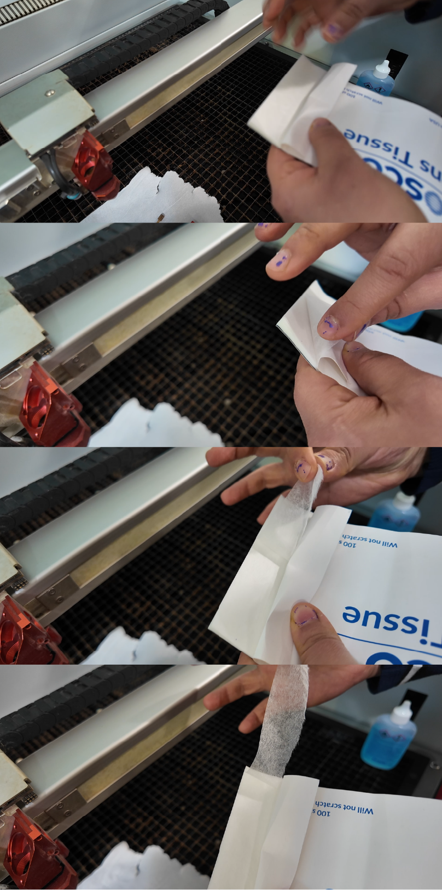
Nettoyez les deux côtés de la lentille, en changeant de tissu à chaque fois.
Découpez un morceau de tissu propre.
Pliez le tissu plusieurs fois.
Appliquez une goutte de liquide sur la lentille et répartissez-le avec la main.
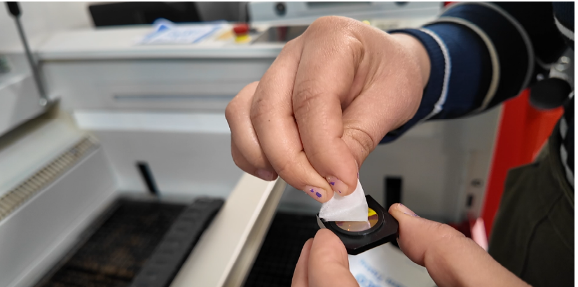
Effectuez des mouvements circulaires doux, du centre vers l’extérieur.
Vérifiez sous la lumière pour s’assurer qu’il ne reste aucun résidu, empreinte ou trace de graisse.
Replacez la lentille et le miroir en respectant la bonne orientation (flèche et “TOP” sur la lentille).
Serrez les vis sans forcer, juste assez pour maintenir la pièce en place.
Nettoyage de la buse (nozzle) :
Dévissez la buse.
Appliquez de l’alcool isopropylique sur un morceau de tissu propre.
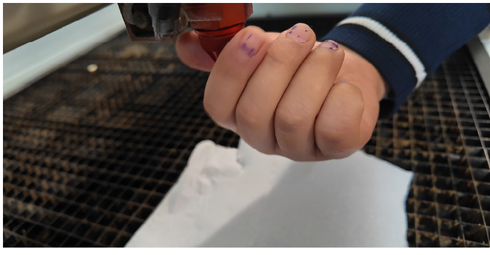
Nettoyez les résidus de résine et d’acrylique présents sur la buse.
Revissez la buse.
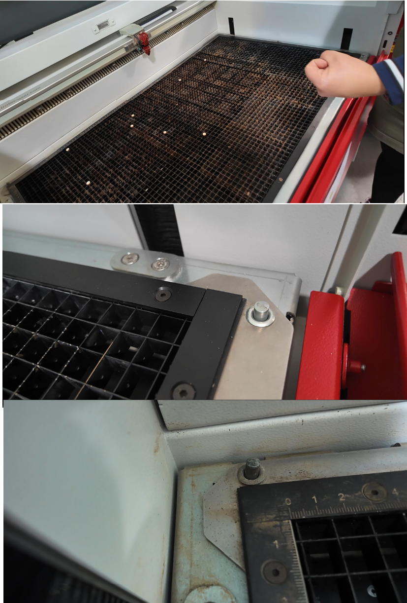
Nettoyage de la grille (avec un aspirateur) :
Dévissez les vis situées en diagonale (inférieure droite et supérieure gauche).
Soulevez la grille et placez-la à côté de la machine.
Aspirez les résidus de matériau avec l’aspirateur.
Replacez la grille avec précaution.
Revissez les vis.
Remontez la base de la machine.

Fermez le capot.

Tutorial 1: Comment utiliser la découpeuse laser
Comment allumer la machine